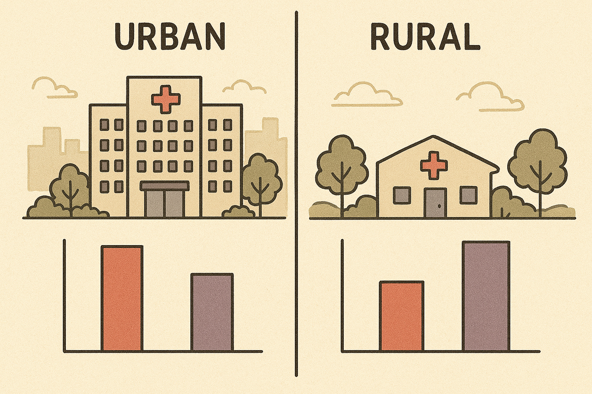
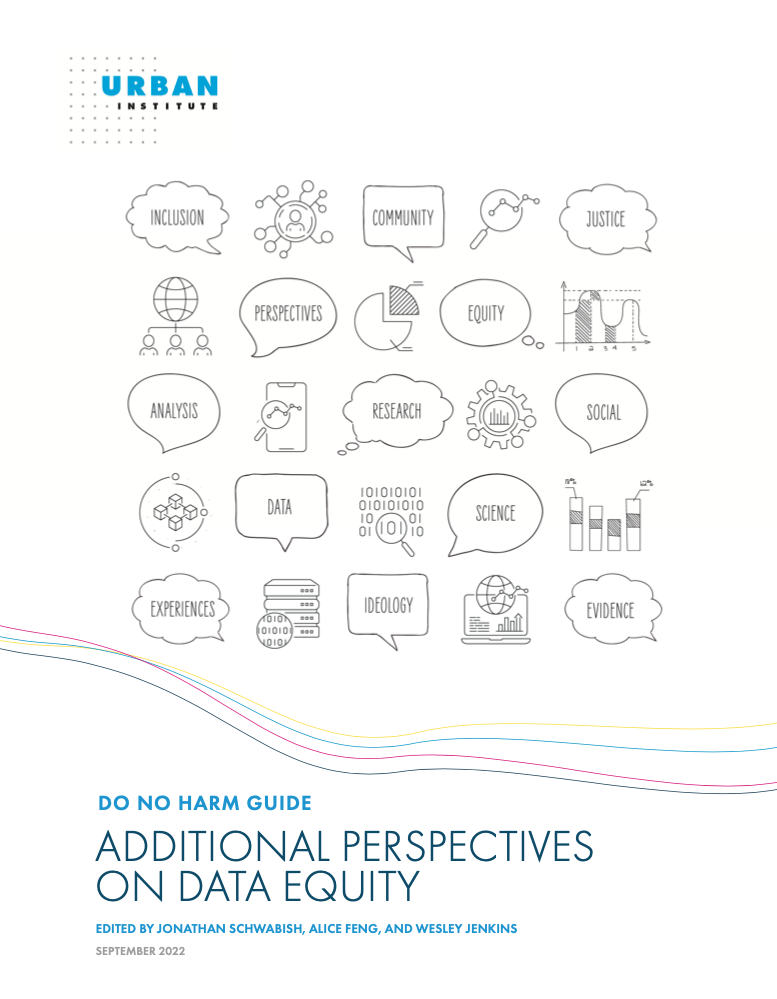

APOM Grand Rounds
2025-10-06
At the conclusion of this activity, participants will be able to:
The consideration of issues of power, bias, and discrimination in how data is collected, analyzed, interpreted, and used
Ensuring research benefits all populations equitably, especially those historically marginalized or underrepresented
Recognition that data is not neutral - it reflects existing social structures and biases
Allow community and patient participation in the research process, ensure trust and accessibility, with the goal of data sovereignty
Ultimately, data equity seeks to achieve just, unbiased, and actionable insights that enhance care quality and reduce disparities across diverse patient populations

Inappropriate aggregation of diverse groups
Lack of contextual variables
Historical unethical studies and misuse of demographic data
NIH Sex and Gender
NIH 4 Cs of Studying SABV
Race is a social construct, commonly used in epidemiologic research to adjust for confounding. However, adjustment of race may mask racial disparities, thereby perpetuating structural racism.
“We adjusted for race”: now what? A systematic review… Swilley-Martinez, Coles, Miller, Alam, Fitch, Cruz, Hohl, Murray, and Ranapurwala (2023)
Urban Institute: Using Race and Ethnicity Data to Advance Health Equity
We adjusted for ….
What does controlling for race (or sex, or gender, or SDOH) mean?
Adjustment, matching, stratification, etc. estimates effects over all strata to present an overall effect between exposure and outcome
When adjusting for the social construct of race, the adjusted effect estimate can be interpreted as the exposure-outcome relationship if racism did not affect the exposure
Pooled effects are weighted toward the larger group
Effect measure modification allows for different effects within groups (race, gender, sex, etc)
Bivariate Model: Y~X
Multiple Regression Y~X+Z
Bivariate Regression Model:
lm(MME ~ patient_race, data = surgical_data)
Interpretation: “On average, do Black patients receive different MME prescriptions at discharge compared to White patients?”
Multiple Regression Model:
lm(MME ~ patient_race + preoperative_pain_score + procedure_time, data = surgical_data)
Interpretation: “Among patients with similar pre-op pain and procedure times, is there still a difference in MME prescriptions between Black and White patients?”
Be cautious controlling for in-hospital patient-reported pain.
Post-attribute bias occurs when we control for variables that may be affected by the attribute we’re studying (a.k.a. post-treatment bias, intermediate variable bias, mediating variable bias)
Bivariate Regression Model:
glm(nerve_block ~ insurance_type, family = "binomial", data = ortho_data)
Interpretation: “On average, are patients with Medicaid less likely to receive a nerve block than patients with private insurance?”
Multiple Regression Model:
glm(nerve_block ~ insurance_type + patient_asa_score + hospital_type, family = "binomial", data = ortho_data)
Interpretation: “Controlling for patient health status (ASA score) and the type of hospital (e.g., teaching vs. non-teaching), are Medicaid patients still less likely to receive a nerve block?”
Bivariate Regression Model:
glm(readmitted ~ lep_status, family = "binomial", data = surgery_discharge_data)
Interpretation: “Do patients with LEP have a higher 30-day readmission rate?”
Multiple Regression Model:
glm(readmitted ~ lep_status + surgical_complexity + length_of_stay, family = "binomial", data = surgery_discharge_data)
Interpretation: “After accounting for how sick the patient was (surgical complexity, length of stay), does LEP status remain a predictor of readmission?”

Data and data projects can only be made more equitable if work teams are diverse, reflect a variety of experiences, and trained to foreground empathy and equity in their work.
Urban Institute’s Do No Harm Guide: Additional Perspectives on Data Equity
Braveman, P. (2023). The social determinants of health and health disparities. Oxford University Press.
Flanagin, A., T. Frey, S. L. Christiansen, et al. (2021). “Updated guidance on the reporting of race and ethnicity in medical and science journals”. In: Jama 326.7, pp. 621-627.
Heidari, S., T. F. Babor, P. De Castro, et al. (2016). “Sex and gender equity in research: rationale for the SAGER guidelines and recommended use”. In: Research integrity and peer review 1, pp. 1-9.
Katz, R. V., S. S. Kegeles, N. R. Kressin, et al. (2006). “The Tuskegee Legacy Project: willingness of minorities to participate in biomedical research”. In: Journal of health care for the poor and underserved 17.4, pp. 698-715.
Marino, M., K. Fankhauser, J. Minnier, et al. (2023). “Disaggregating Latino nativity in equity research using electronic health records”. In: Health Services Research 58.5, pp. 1119-1130.
Retzer, A., B. Ciytak, F. Khatsuria, et al. (2023). “A toolkit for capturing a representative and equitable sample in health research”. In: Nature Medicine 29.12, pp. 3259-3267.
Swilley-Martinez, M. E., S. A. Coles, V. E. Miller, et al. (2023). ““We adjusted for race”: now what? A systematic review of utilization and reporting of race in American Journal of Epidemiology and Epidemiology, 2020-2021”. In: Epidemiologic reviews 45.1, pp. 15-31.
Venkateswaran, N., J. Feldman, S. Hawkins, et al. (2023). “Bringing an equity-centered framework to research: Transforming the researcher, research content, and practice of research”.
Social Determinants of Health (SDOH)
US Dept of Health & Human Services: Healthy People 2030